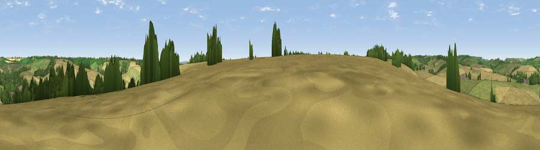

Viewpoint near Aldbourne
#37283 in England · top 71% of its area beats it · near Aldbourne · footpathWhere it is
The exact computed spot (SU 26425 74325). Click the marker for map links.
Public access: a public right of way passes within 38 m of this spot. Computed from Natural England's CRoW access layer and OpenStreetMap rights of way — not the legal definitive map. Always verify locally.
The view, rendered

A 360° render of this exact spot computed from the terrain model, tree cover and land cover — summer colours, afternoon light, calibrated against photographs of famous viewpoints. Real trees, hedges and buildings will differ in detail.
The panorama
Grey silhouette: terrain skyline in each direction (720 bearings, Earth curvature and refraction included). Dashed green: skyline with trees (+15 m) and buildings (+8 m) as obstacles. Blue strip: how far the ground is visible on each bearing.
Where the view opens
Wedge length = distance to the farthest visible ground on that bearing (vegetation-aware). Rings at 10, 25 and 50 km.
What fills the view
58% cropland · 25% grassland · 15% woodland · 2% built-up
Angular shares of the visible panorama (visual magnitude), not map area. Landscape diversity 0.44 (0–1 Shannon).
Key numbers
More beautiful places nearby
The staircase of upgrades: each row has a higher view potential than everything closer. Driving times are estimates from straight-line distance, calibrated against real road routing — check an actual route before setting out.
| Place | Direction | Drive | Score |
|---|---|---|---|
| Viewpoint near Mildenhall | WSW · 3 km | ~8 min | 38.1 |
| Peaks Downs | N · 5 km | ~10 min | 48.2 |
| Viewpoint near Baydon | NNE · 6 km | ~12 min | 51.9 |
| Viewpoint near Ogbourne St George | WNW · 6 km | ~13 min | 63.4 |
| Liddington Hill | NW · 7 km | ~15 min | 64.7 |
| Viewpoint near Ogbourne St George | W · 8 km | ~15 min | 64.9 |
| Viewpoint near Hinton Parva | NNW · 8 km | ~15 min | 66.2 |
| Viewpoint near Liddington | NW · 8 km | ~16 min | 74.4 |
51.46728, -1.62098 · source: screening · position refined by local search. Computed location — check access rights before visiting.